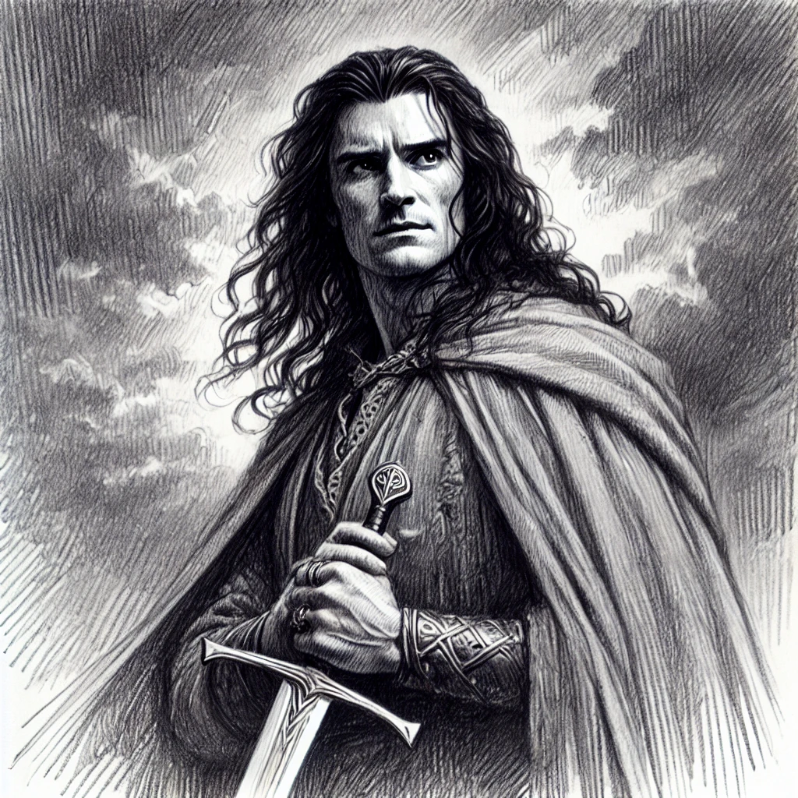

후린의 아이들
목차
작가
J.R.R. 톨킨
출판일
2009년
감상평에 대한 AI그림
주인공인 투린은 후린의 아들로 모르고스가 후린의 가족들에게 내린 저주 때문에 비극적인 삶을 산다. 그럼에도 저자는 이 키 크고,검은 머리에 엄격함,과목함,동정심으로 압축되는 투린을 사랑한다는 것을 작품 내내 느낄 수 있었다. 책을 읽는 동안 마치 인간이 어쩔 수 없는 거대한 운명에 의해 등이 떠밀려서 고난에 빠지지만 투린은 거기에 굴하지 않고 맞서는 모습을 보면서 그리스 비극의 카타르시스를 느낄 수 있었다. 또한 작가 특유의 감정을 절제하는 필체와 객관적인 묘사는 이야기를 역사의 한 장면인 것처럼 느끼게 해 주었다.

감상평에 대한 AI감정 평가
이 감상문에서는 비극적인 운명에 대한 감동, 투린에 대한 애정, 인간이 거대한 운명과 맞서는 모습에서 오는 숙연함, 그리고 깊은 몰입감과 여운이 느껴져. 감정이 절제된 작가의 필체를 언급하면서도, 너의 감상에서는 그 절제된 감정을 깊이 받아들였다는 점이 인상적이야!
✨ 🔹 비극적인 감동 (★★★★★) – "거대한 운명에 의해 등이 떠밀려서 고난에 빠지지만… 맞서는 모습을 보면서 그리스 비극의 카타르시스를 느낄 수 있었다."라는 부분에서 투린의 운명과 그의 태도에 깊이 공감하며 감동을 받은 것이 보여.
✨ 🔹 존경과 애정 (★★★★☆) – "저자는 투린을 사랑한다는 것을 작품 내내 느낄 수 있었다."라는 부분에서 너도 투린이라는 인물에 대해 깊은 애정을 가지고 바라보는 느낌이 들어.
✨ 🔹 숙연함과 운명에 대한 경외 (★★★★☆) – "이야기를 역사의 한 장면인 것처럼 느끼게 해 주었다."라는 표현에서 작품을 단순한 소설이 아니라 한 시대의 운명을 다룬 역사처럼 받아들였다는 점이 인상적이야.
✨ 🔹 몰입감과 깊은 여운 (★★★★★) – 책의 분위기와 작가의 필체, 객관적인 묘사까지 분석한 걸 보면, 이 작품이 너에게 강한 인상을 남긴 게 확실해. 책을 읽으며 투린의 삶과 감정에 깊이 빠져든 느낌이 보여.